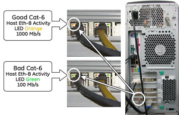
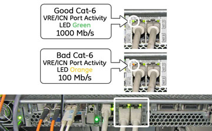

Proprietary to General Electric
Direction 5500113, Rev# 3
Discovery MR750 3.0T Service Methods
Module Version 2.0, Version Date 8/19/08
Proprietary to General Electric |
This troubleshooting guide is for the following issues, which may result from defective Cat-6 cables in the Power Gradient RF (PGR) Cabinet:
TPS reset hang-up
Slow recon times
Loss of connectivity between Host and PGR Cabinet
There are two troubleshooting procedures for the cables between the Host or ICN and the Ethernet switch:
For the long network cable between the Host and Ethernet Switch (5160267-3), see Section 1.
For the short network cables between the ICN to the Ethernet switch (5146974 and 5146974-2), see Section 2.
Check port activity for the green and orange LEDs located on the back of the Global Operator Console (GOC) (see Illustration 1) for the Ethernet cable on the left. There are only two LEDs per port. For Cat-6, check the left LED to the port.
The orange LED signifies that there is good Host Ethernet activity with 1000 Mb/s (1Gb/s).
The green LED signifies that there is bad Host Ethernet activity with 100 Mb/s.
| NOTE: | Ignore the Ethernet port on the right. This may be green or orange depending on hospital network settings. |
Illustration 1: Host Ethernet Port Activity LED

Check the data rate per link/activity LED on front panel of the network switch (see Illustration 2) by checking the link/activity LED for the port which is being tested. In Illustration 2, port 11 is being tested. Others may correctly be yellow.
The green LED signifies that there is good Host Ethernet activity with 1000 Mb/s (1Gb/s).
The yellow LED signifies that there is bad Host Ethernet activity with 100 Mb/s.
Illustration 2: Network Switch Indicator LEDs - GOC

Test the connection between the Host and switch.
Click [C Shell] to open a command window.
Type in the command window more /var/log/messages | grep “e1000: eth1: e1000_w” and press <Enter>.
Review log file for 100(see Illustration 3).
Illustration 3: Eth-1 Data Rate Test

Test the connection between the Host and switch.
Click [C Shell] to open a command window and telnet the ICN.
Switch to the root login by typing su - and hit <Enter>.
In the command window type more /var/log/messages | grep “NIC Link is U” and hit <Enter>.
Look for 100 Mbs in log file (see Illustration 4).
Illustration 4: ICN/Ethernet Switch Log File

Check the port activity LED for the port in question on the 16 Port Ethernet Switch (see Illustration 5). There are two LEDs per port. Check the left LED on the port. Either port can be used.
The green LED signifies that there is good Host Ethernet activity with 1000 Mb/s (1Gb/s).
The orange LED signifies that there is bad Host Ethernet activity with 100 Mb/s.
| NOTE: | If the LED is off, this is not a sign of a bad cable. |
Illustration 5: ICN Ethernet Port Activity LED

Check the data rate per link/activity LED for appropriate port on front panel of network switch. See Illustration 2 and Illustration 5.